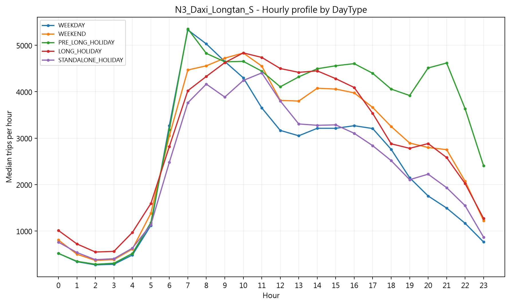
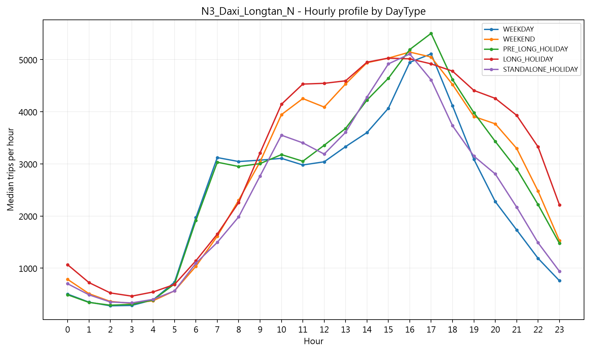
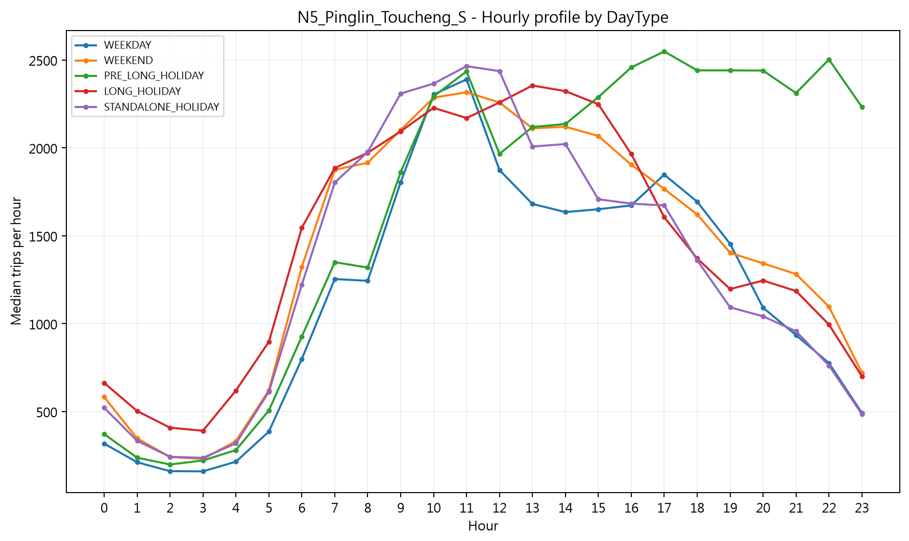
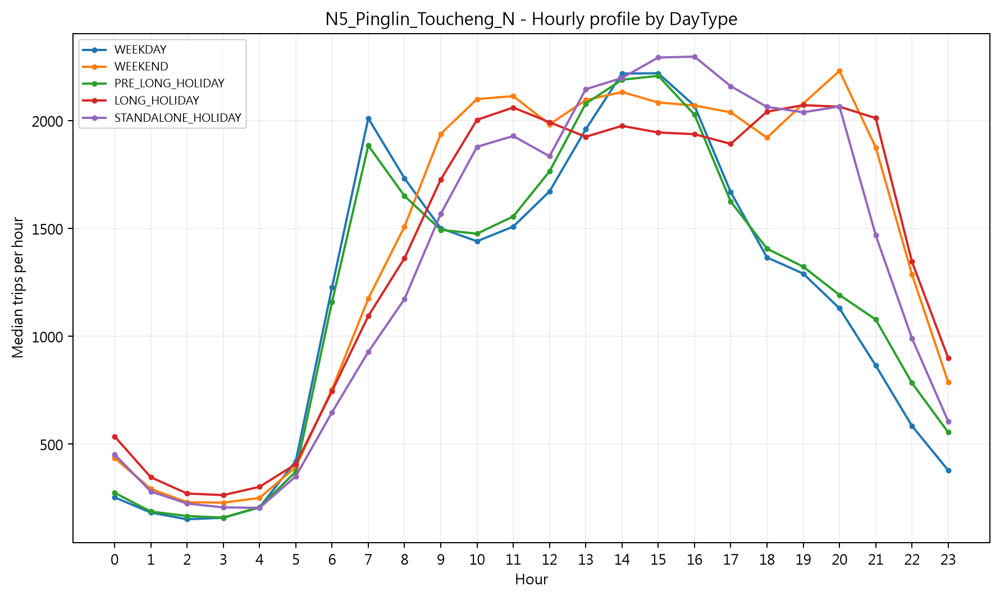
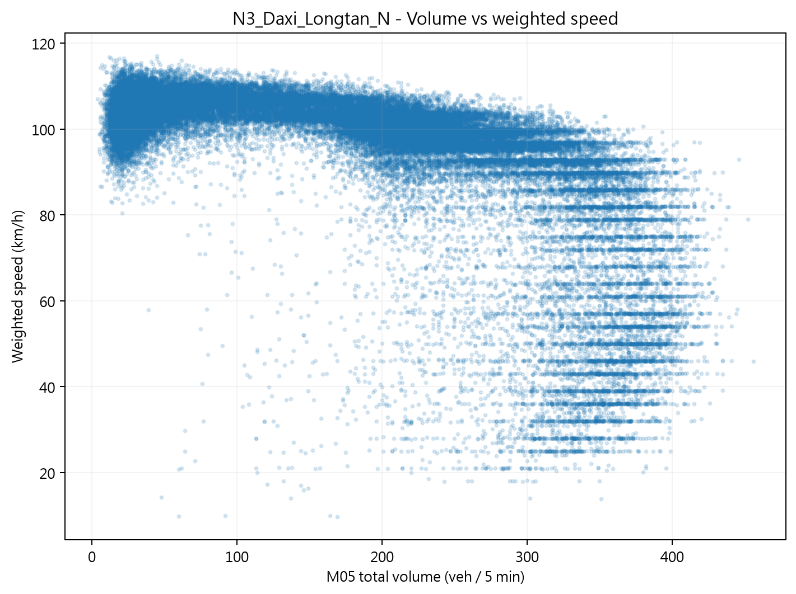
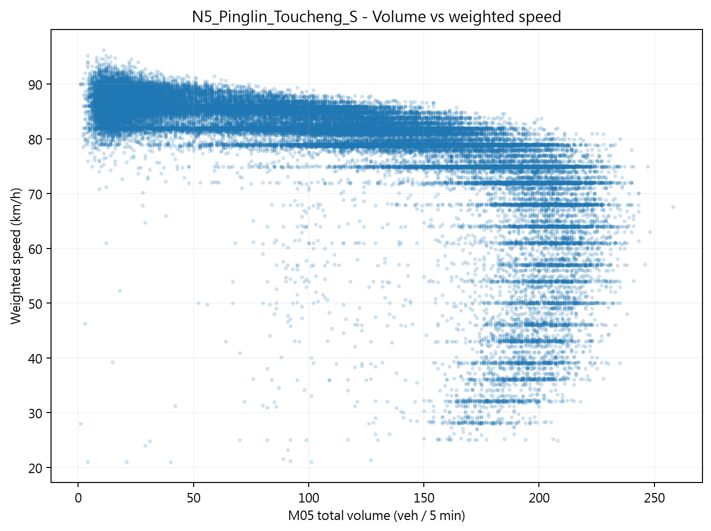
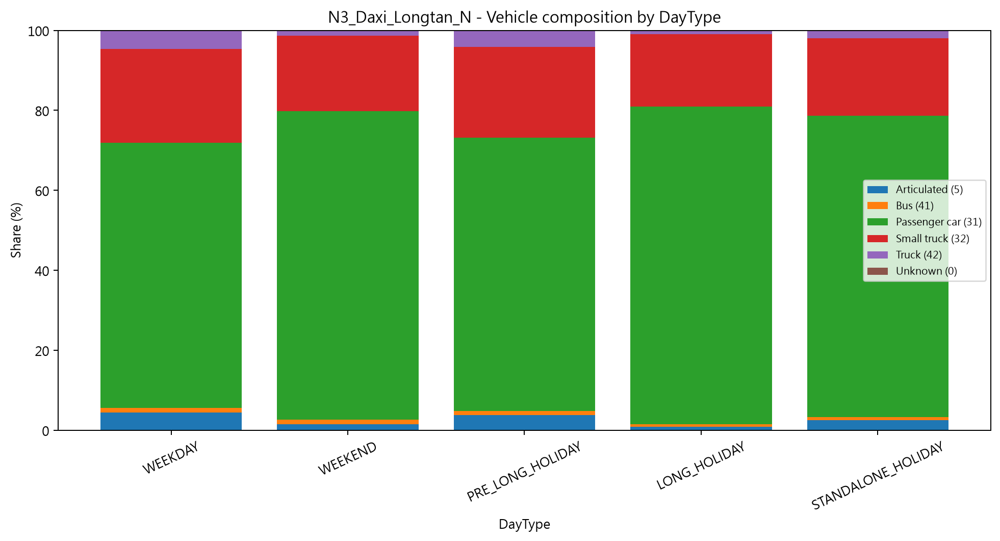
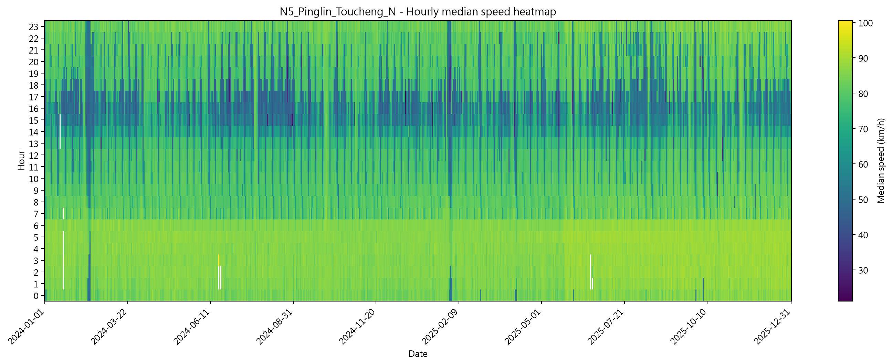

本週進度摘要
截至 2026-10-01，V1 Core Master 已完成資料整併、兩階段 QC 與第一輪基本 EDA。 目前未發現需要大規模刪除的系統性資料錯誤，資料可進入 OD 結構分析與 5-minute modeling dataset 建置階段。
V1 Core Master
完成
M06B + M05A + Weather + Calendar
Data QC
PASS
無 exact duplicate
Basic EDA
完成
4 個方向
Next
OD
Pattern / Dynamic Visualization
1. 本週資料規模
| 研究方向 | Master Trips | 方向內 Unique Vehicle IDs | Median TripLength | Median M05 Speed | Median M05 Volume / 5min |
|---|---|---|---|---|---|
| N3 大溪－龍潭 北向 | 45,150,592 | 4,334,000 | 59.37 km | 100.97 km/h | 196 |
| N3 大溪－龍潭 南向 | 46,306,247 | 4,349,576 | 58.57 km | 98.15 km/h | 203 |
| N5 坪林－頭城 北向 | 22,158,407 | 2,877,625 | 51.22 km | 80.89 km/h | 112 |
| N5 坪林－頭城 南向 | 22,659,631 | 2,921,014 | 51.34 km | 81.94 km/h | 110 |
四個 Master 合計 136,274,877 筆研究瓶頸通過紀錄。Unique Vehicle IDs 為各方向內的 distinct count，
不可直接相加解讀為全研究唯一車輛數，因同一匿名 VehicleID 可能出現在不同方向資料中。
2. 第一輪 EDA 主要發現
2.1 日交通量與年度變化
| 方向 | 平均每日 Trips | 2024 → 2025 平均每日量變化 | 最高日 |
|---|---|---|---|
| N3 北向 | 61,766 | +0.08% | 2025-02-01：109,423 |
| N3 南向 | 63,346 | +0.02% | 2024-04-03：89,689 |
| N5 北向 | 30,312 | +3.13% | 2024-02-14：49,382 |
| N5 南向 | 30,998 | +2.88% | 2025-04-03：51,493 |
初步觀察：
N3 兩方向 2024 與 2025 的平均每日旅次量接近；N5 兩方向 2025 的平均每日量約較 2024 高 3%。
這裡僅是 Master-based descriptive comparison，不直接解讀為因果或官方年成長率。
2.2 DayType 與方向性尖峰
| 方向 | Weekday Peak | Weekend Peak | Pre-long-holiday Peak | Long-holiday Peak |
|---|---|---|---|---|
| N3 北向 | 17:00 | 16:00 | 17:00 | 15:00 |
| N3 南向 | 07:00 | 10:00 | 07:00 | 10:00 |
| N5 北向 | 15:00 | 20:00 | 15:00 | 19:00 |
| N5 南向 | 11:00 | 11:00 | 17:00 | 13:00 |
初步解讀：
四個方向呈現明顯的「方向 × DayType × Hour」交互型態。
N3 南向偏早上、北向偏下午；N5 南向偏去程型需求，北向則在週末與連假出現較晚的回程尖峰。
尤其 N5 南向連假前一天在下午至晚間仍維持高量，值得在 holiday lifecycle 中進一步拆成 D−3、D−2、D−1、Holiday_D1…分析。
2.3 車種組成
| 方向 | Weekday 小客車占比 | Weekend | Long Holiday |
|---|---|---|---|
| N3 北向 | 66.3% | 77.2% | 79.4% |
| N3 南向 | 66.2% | 77.3% | 79.4% |
| N5 北向 | 71.6% | 77.5% | 78.5% |
| N5 南向 | 71.9% | 77.2% | 78.2% |
初步觀察：
週末與連假時，小客車占比在四個方向均上升；N3 平日的小貨車、大貨車與聯結車占比相對較高。
因此後續壅塞模型除了總流量，也應考慮 vehicle composition，而不能只使用單一 flow 指標。
2.4 TripLength
| 方向 | Weekday Mean | Weekend Mean | Long Holiday Mean |
|---|---|---|---|
| N3 北向 | 82.96 km | 95.85 km | 111.51 km |
| N3 南向 | 82.98 km | 92.55 km | 109.41 km |
| N5 北向 | 62.88 km | 65.24 km | 70.46 km |
| N5 南向 | 61.48 km | 65.87 km | 71.68 km |
初步觀察：
假期通過瓶頸的旅次整體更長，N3 的差異尤其明顯。
這支持後續將 TripLength distribution、LongTripShare 與 OD composition 一起納入事件型分析。
2.5 交通狀態：Volume × Speed
散佈圖顯示 Speed 與 Volume 不是單純線性關係。
在高流量區會出現明顯向低速分支展開的型態，表示相近流量下可能同時存在自由流與壅塞狀態。
因此後續比單純線性 regression 更適合考慮 tree-based model、GAM，或 traffic-regime / state-transition 分析。
2.6 Weather：目前不能只看單變量下結論
第一輪 rainfall 分組中，雨量較高時的 median speed 並沒有單調下降，部分方向反而較高；同時 MeanVolume 明顯較低。
因此目前不能寫成「下雨造成速度下降」。比較合理的解讀是：Weather 與 Hour、DayType、Season、Demand 同時變動，
後續需要在控制 traffic volume 與 calendar effect 後，再判斷 Weather 是否具有額外解釋力。
3. 本週代表性圖表

N3 南向 DayType × Hour
平日與連假前一天 07:00 左右最突出；週末與連假尖峰往 10:00 左右移動。
平日與連假前一天 07:00 左右最突出；週末與連假尖峰往 10:00 左右移動。

N3 北向 DayType × Hour
尖峰主要落在下午至傍晚，與南向形成清楚方向差異。
尖峰主要落在下午至傍晚，與南向形成清楚方向差異。

N5 南向 DayType × Hour
連假前一天下午至晚間仍維持高需求，顯示 D−1 可能是重要的提前出發時段。
連假前一天下午至晚間仍維持高需求，顯示 D−1 可能是重要的提前出發時段。

N5 北向 DayType × Hour
週末與連假回程型態延後，晚間仍維持相對高的通過量。
週末與連假回程型態延後，晚間仍維持相對高的通過量。

N3 北向 Volume × Speed
高流量區出現多個速度層級與低速分支，顯示交通狀態具有非線性與 regime change 特徵。
高流量區出現多個速度層級與低速分支，顯示交通狀態具有非線性與 regime change 特徵。

N5 南向 Volume × Speed
在較高流量區可以觀察到速度向下分散，後續可進一步建立 congestion-state 定義。
在較高流量區可以觀察到速度向下分散，後續可進一步建立 congestion-state 定義。

N3 北向 Vehicle Composition
Weekday 與 Weekend / Holiday 的車種組成差異明顯，支持將 composition 作為後續模型特徵。
Weekday 與 Weekend / Holiday 的車種組成差異明顯，支持將 composition 作為後續模型特徵。

N5 北向 Speed Heatmap
下午時段反覆出現較低速帶，且不同日期強度差異大，適合後續做 event-based congestion detection。
下午時段反覆出現較低速帶，且不同日期強度差異大，適合後續做 event-based congestion detection。
4. 下一步工作
| 優先度 | 工作 | 目的 | 預計輸出 |
|---|---|---|---|
| 1 | OD 基本 EDA | 確認主要 Origin、Destination 與 OD pairs | Top O / Top D / Top OD、OD matrix heatmap |
| 2 | OD 動態視覺化 | 觀察 Hour / HolidayPhase 下 OD 組成如何移動 | Animated OD heatmap / map / Sankey HTML |
| 3 | OD pattern 指標 | 把視覺 pattern 量化成可分析特徵 | Top1Share、Top5Share、HHI、Entropy、JS divergence |
| 4 | 完整 5-minute Modeling Dataset | 建立固定 288 intervals/day 的建模單位 | Route × Direction × Time5 table |
| 5 | Congestion state / early warning | 定義壅塞發生與 15/30/60 分鐘預警目標 | CongestionNow / Next15 / Next30 / Next60 |
本頁為 2026 年 10 月第一週進度紀錄；數值來自 V1 Core Master 第一輪 EDA，後續分析更新時可持續追加，不覆蓋歷史版本。